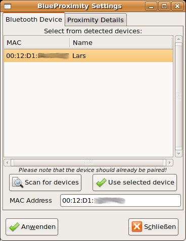
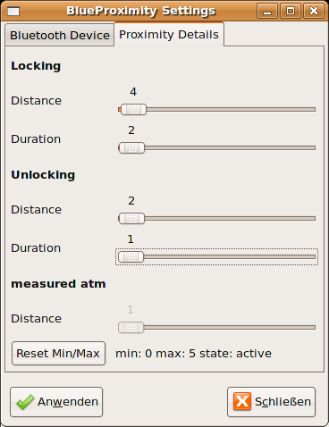

Single-left-click on the icon to make the settings screen appear.
This manual tries to give you the most pleasurable experience with your BlueProximity environment. You should read it carefully to get the idea behind and fully understand its possibilities and limits.
Basically BlueProximity is a tool to detect your presence near your computer. It can automatically lock your computer once you leave it and unlock it when you are back. Technically it does it the following way. It connects to your mobile phone via bluetooth and uses the rssi value – something like the automatically set transmission power – to get a distance approximation. It gives more a quality information than a quantity one. Bigger numbers are most likely bigger distances but the rssi value changes slowly and is a little inaccurate since you could also cover your phone with your hands – that will increase the rssi value without any distance change...
You see, we cannot measure exact distances but in stable environments you will most likely get reproduceable results.
At the moment the prerequisites include a unix system with an installed python interpreter. You need the hcitool tool installed. On my Ubuntu system they are included in the bluez-utils package. You also need the PyGTK (python-gtk2, python-glade2), ConfigObj (python-configobj) and Bluetooth (python-bluez) extensions for python.
You should download the newest version of BlueProximity from its sourceforge site at http://blueproximity.sourceforge.net and unpack it via tar xvzf blueproximity-versionnumber.tar.gz
Start BlueProximity by typing start_proximity.sh
First you should pair your computer and your mobile phone. It should not be part of this manual how to do that at this time. Just as a hint – using the GNOME desktop the package bluetooth-gnome might help you do that. Once being paired your mobile won't ask for a password when a connection from the computer to the phone is made. There is still the possibility that your mobile phone will ask you to accept the connection which is an additional layer of security appart from the pairing mechanism. Your phone should have an option to disable this question for all or even one special paired device. Disable that question as not disabled renders BlueProximity quite unusable.
After setting up the phone computer pair you can now move on and configure BlueProximity. After the first start you see the settings window. if you closed that by accident or it did not show up, you see the BlueProximity icon in the notification area as shown here. (It may appear with a colorless P and a yellow spark in there.)
Single-left-click
on the icon to make the settings screen appear.

You
will see two tabs regarding different types of settings. On the first
tab you may configure the basic connection between computer and
phone, the second tab will show settings to adapt the distance
detection to your hardware.
The first setting you should adjust is the MAC address of your mobile phone. If you know it you can skip the next step.
To find out that address you should configure your phone to bluetooth visible mode. It may be the standard setting but you never know... Now click on the Scan for devices button. A scan takes about 10 seconds. You should find your device in the list now, maybe among other bluetooth devices around your place.

Just
click on your device and on the Use selected device
button. Your device's mac address should now appear in the mac
address field.
You may click on the button called Anwenden in this screenshot. I am sorry, but I have a german system and don't know how the button is called on an english system, it might be accept or activate or something like that.
Now BlueProximity should already start working but there might be further tuning of distance parameters needed. Note: Your screen will never be locked as long as the settings screen is shown. This way you can change the detection parameters and test them.
The second tab will look like this:

You
see three sections called Locking, Unlocking and measured atm. The
Locking section sets the parameters when to lock the screen. The
distance parameter refers to the ruler in the distance section. You
should experiment by placing the phone to a place where you want the
lock to happen. Wait some seconds and you should see the value grow.
It might be easier if you click on the Reset Min/Max
button, move the mobile phone to the lock perimeter and wait some
seconds. Take it back to the computer and you will see the maximum
value right to the button. Set the lock distance to that value. The
duration parameter controls how many seconds the measured distance
should stay at least at or above the lock distance to lock the
screen. You should set this value to more than one second as it is
possible for the rssi value to oscillate sometimes. You will only
loose seconds of security but win usability by not unexpectedly
locking your screen.
Set the values for unlocking in a similar maner. It is usual to set the distance lower than the lock distance. Click on the button called Anwenden in the screenshot again to let BlueProximity use the new settings.
You may just press the close button and see if your desktop gets locked or use the simulation mode which is always active if the settings dialog is open. You may switch to the second tab to see the actual measured value and the resulting locking state right to the reset button. You may also have a look at the notification area icon which even gives you a nice tooltip when hovering your mousepointer over it. You may see these icons:

The
white 'P' letter shows that BlueProximity thinks everything is ok and
you are around within the safe distance.

The
yellow 'P' letter let's you know that the detected distance is now
still below the lock distance but above the unlock distance. So if
your computer was locked by BlueProximity it would not yet be
unlocked here.
The
red 'P' letter shows what you would never see while the settings
dialog is closed – this shows the screen would be locked now.
You should play around with the settings for some time to find a good setting that fits your demand and environment.
Once started a config file named ~/.blueproximityrc is created and shows all configurable settings with its default values. In this file you may use different commands to lock the screen to make the programm useable with the KDE desktop or even start your own scripts.
If you would like to stop the software (for whatever reason that might be) you should right click on the tray icon and select close in that menu. It may take up to three seconds to shutdown the software.
Q: I can't see my mobile phone when scanning.
A: You need to activate bluetooth and disable invisibility in your phone's bluetooth settings.
Q: My phone gets detected but the distance is always 255.
A: Most likely your phone uses another channel for
communication than the phones we tried. You can find a usable channel
by brute force or by using the sdptool browse command. In
the output watch for the lines starting with RFCOMM and
Channel: where the number after channel is the needed
channel number. In the config file ~/.blueproximityrc
change the device_channel setting to the new channel.
Channels address different services on the phone – you might
sometimes even appear as a headset e.g.